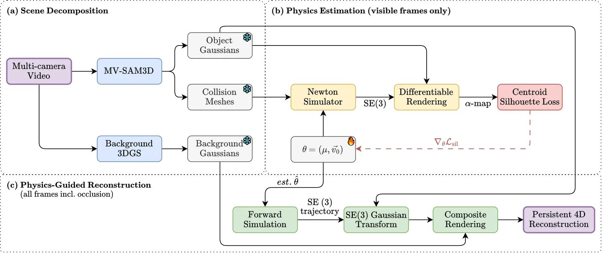
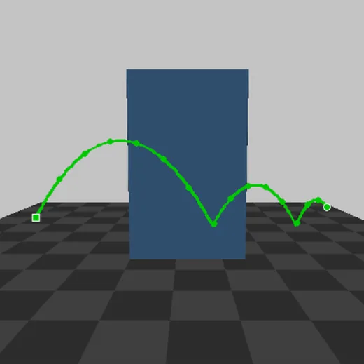
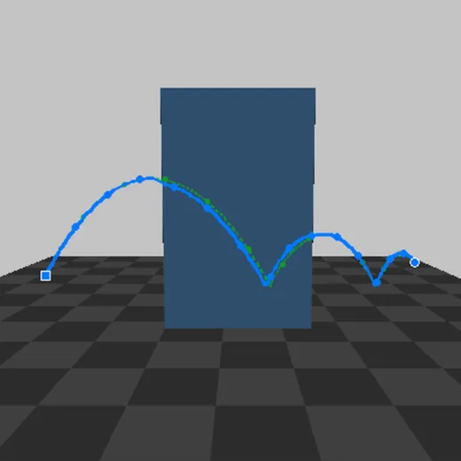

Dynamic 3D Gaussian Splatting (3DGS) methods reconstruct time-varying scenes from synchronized multi-camera video using photometric supervision. When a moving object becomes fully occluded from all training cameras, this supervision vanishes: the Gaussians representing it receive no gradient signal and degrade. Existing approaches to incomplete observations in neural reconstruction rely on learned generative priors that prioritize visual plausibility over physical correctness.
We propose PersistGS, a method that restores object permanence during occlusion by coupling differentiable rigid body simulation with 3D Gaussian Splatting. Our approach decomposes the scene into per-object Gaussians and collision meshes, estimates friction and velocity from the observed pre-occlusion trajectory via differentiable simulation, and uses the resulting SE(3) trajectory to position object Gaussians throughout the occlusion period. Because the predicted trajectory satisfies the governing equations of rigid body dynamics, it faithfully captures contact events (bounces, friction-based deceleration, direction changes) that kinematic extrapolation cannot model. We introduce a centroid silhouette loss that isolates positional gradients from appearance noise, yielding 40% lower trajectory error than photometric supervision. We evaluate using cameras withheld from training that observe the object during its occlusion. Experiments on synthetic scenes show that PersistGS outperforms constant velocity extrapolation by +2.46 dB PSNR and comes within 0.19 dB of a ground-truth trajectory upper bound.

(a) Scene decomposition extracts per-object Gaussians and collision meshes with MV-SAM3D and trains the background Gaussians separately; all of them are then frozen. (b) Physics estimation simulates candidate parameters, friction μ and initial velocity v₀, in NVIDIA Newton, renders the alpha channel of the positioned object Gaussians, and minimizes a centroid silhouette loss. (c) Dynamic reconstruction moves the frozen object Gaussians along the estimated SE(3) trajectory and composites them with the background.
The object is simulated as a rigid body in NVIDIA Newton, and Warp's tape-based automatic differentiation gives gradients through the whole trajectory, including contacts. Two changes to Newton's contact kernels make those gradients usable: a smooth friction model replaces a hard clamp that gave zero gradient once friction saturated, and material parameters are no longer averaged with the body's, which had routed only half of the gradient to them.
Instead of a pixel-wise photometric loss, PersistGS compares the centroid of the rendered silhouette with the centroid of the ground-truth mask. This separates the object's position, which physics decides, from its appearance, which is fixed from the frames before occlusion, and it gives friction gradients about 100 times larger. Estimation follows the order in which the parameters become observable: velocity from frames before contact, then friction from frames after contact, then both together, about 5.5 minutes per scene.
During occlusion, the object's Gaussians follow the simulated trajectory with no photometric supervision. When the object re-emerges, supervision resumes.
The evaluation uses three synthetic scenes simulated in NVIDIA Newton, each with a rigid ball, a ground plane and an occluding wall, arranged so that contact happens while the ball is hidden: a ground bounce behind the occluder (ball_fall, 248 occluded frames), a hidden second bounce (ball_bounce, 80 frames) and a roll that slows under friction (ball_roll, 45 frames). Each scene has 5 training cameras and 2 evaluation cameras withheld from training, at 512×512 and 60 fps. Metrics use an object-region crop from the evaluation cameras during occlusion.
Mean PSNR during occlusion, three scenes
PersistGS is 2.46 dB above constant-velocity extrapolation, the only causal kinematic baseline, and 0.19 dB below the ground-truth trajectory. *Linear interpolation needs the position where the ball re-emerges, so it cannot run causally; it is competitive only on ball_roll, where the hidden path is nearly straight.

Ground truth

PersistGS
PersistGS follows the physics-predicted arc, including the hidden bounce.
ball_bounce, rendered from an evaluation camera that sees past the occluder. Green dotted outlines mark the ground-truth ball position; in the trajectory view, the green path is the ground truth.
Reconstruction during occlusion (object-region crop, evaluation cameras)
| Method | PSNR (dB), higher is better | LPIPS, lower is better | ||||||
|---|---|---|---|---|---|---|---|---|
| Fall | Bounce | Roll | Mean | Fall | Bounce | Roll | Mean | |
| Ground-truth trajectory (upper bound) | 16.08 | 18.33 | 17.60 | 17.34 | .403 | .203 | .247 | .284 |
| PersistGS | 15.76 | 18.02 | 17.67 | 17.15 | .405 | .279 | .257 | .314 |
| Linear interpolation* | 11.98 | 17.75 | 17.50 | 15.74 | .500 | .339 | .305 | .381 |
| Constant velocity | 14.13 | 14.93 | 15.01 | 14.69 | .555 | .469 | .450 | .491 |
| No physics | 10.63 | 12.63 | 12.77 | 12.01 | .761 | .716 | .669 | .716 |
Trajectory RMSE during occlusion, lower is better
| Method | Fall | Bounce | Roll | Mean |
|---|---|---|---|---|
| PersistGS | 1.147 | 0.366 | 0.288 | 0.600 |
| Linear interp.* | 3.603 | 0.720 | 0.222 | 1.515 |
| Constant velocity | 8.936 | 5.716 | 1.427 | 5.360 |
Estimated physical parameters
| Scene | μ, true | Estimated | Error | v₀ (m/s), true | Estimated |
|---|---|---|---|---|---|
| ball_fall | 0.300 | 0.290 | 3.3% | (3, 0, 0) | (2.999, −0.007, −0.045) |
| ball_bounce | 0.150 | 0.151 | 0.7% | (5, 0, 7) | (4.993, −0.094, 6.994) |
| ball_roll | 0.400 | 0.363 | 9.3% | (10, 0, 0) | (9.527, 0.033, −0.218) |
Friction is recovered within 10% and initial velocity within 0.5 m/s on every component. In an ablation, the centroid silhouette loss gave 40% lower mean trajectory error than a masked pixel-wise loss (RMSE 0.586 against 0.984).
All scenes are synthetic and contain a single sphere. A sphere's silhouette does not change with rotation, so these experiments test the translational part of the centroid loss; the full SE(3) pipeline is implemented, but objects whose orientation changes their appearance are untested. Multi-object scenes with contact between objects, and removing the need for a known object segmentation, are future work. Parameters also have to be observable: on ball_bounce the first ground contact happens during occlusion, so friction cannot be estimated from the frames before it.
@InProceedings{ramlal2026persistgs,
author = {Ramlal, Adrian and Zelek, John S.},
title = {PersistGS: Differentiable Physics for Object Permanence in 4D Gaussian Splatting},
booktitle = {Proceedings of the IEEE/CVF Conference on Computer Vision and Pattern Recognition (CVPR) Workshops},
month = {June},
year = {2026},
pages = {4687-4696}
}